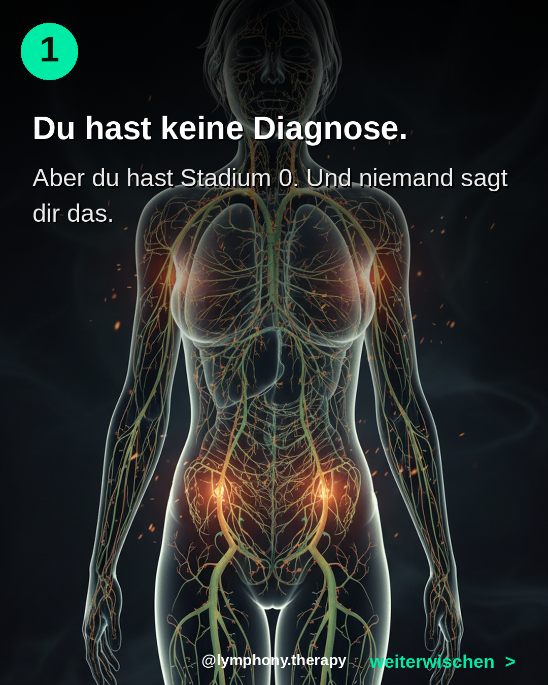
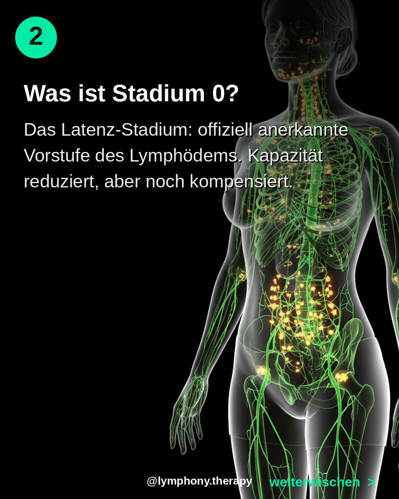
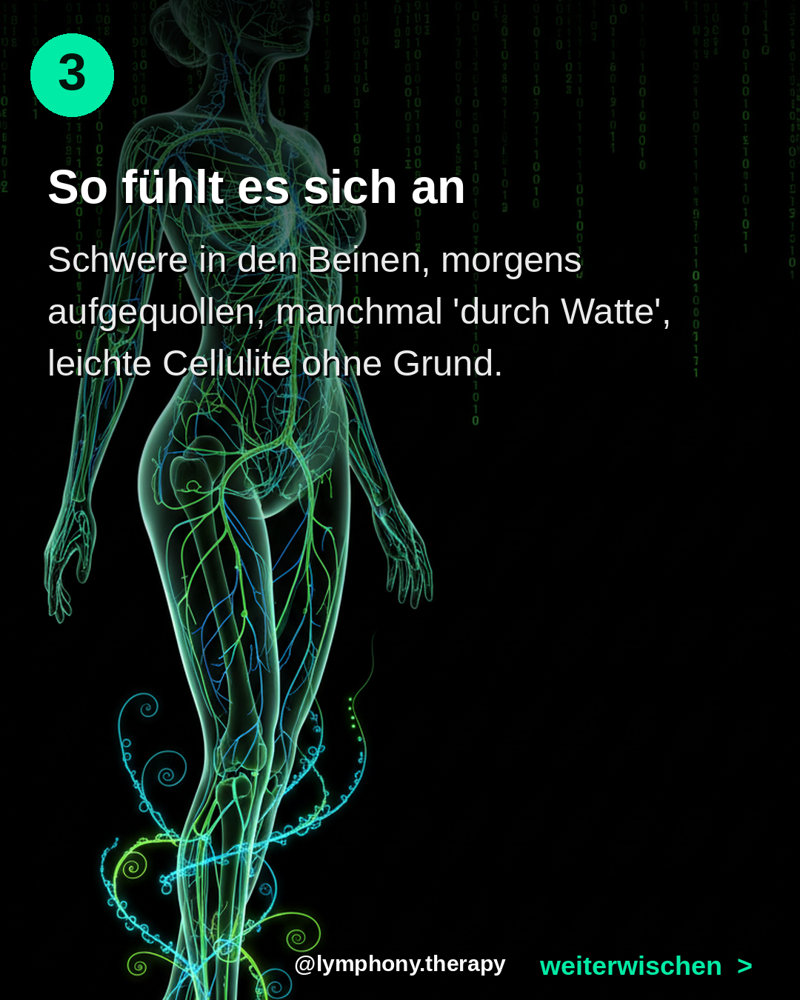
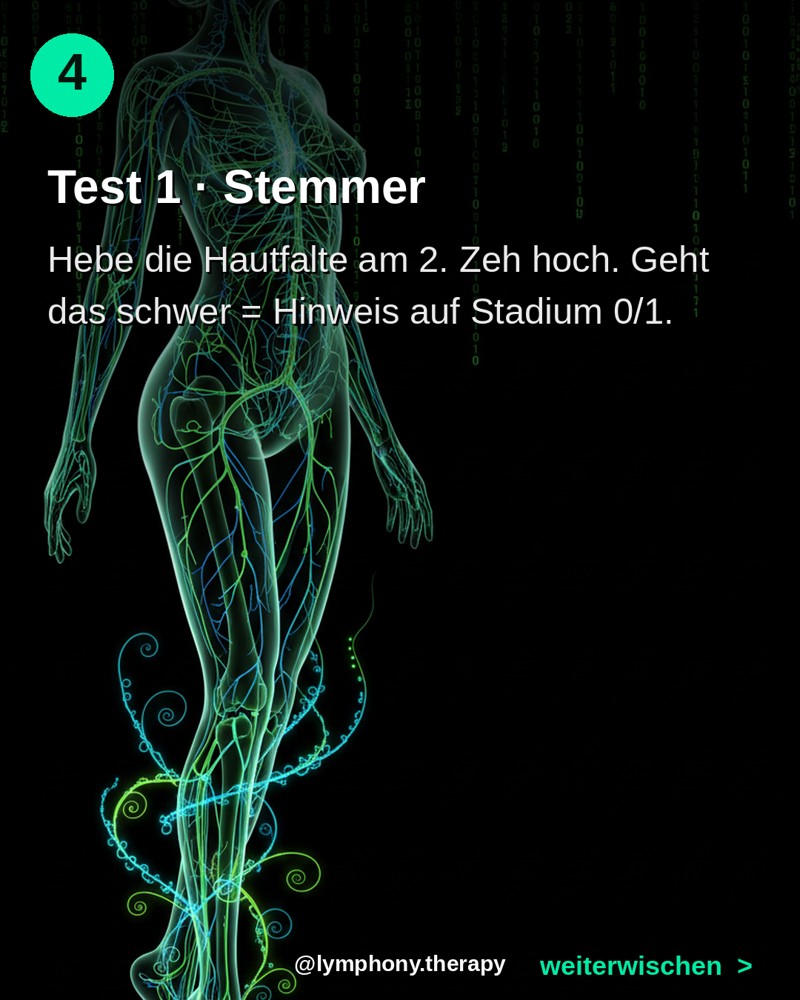
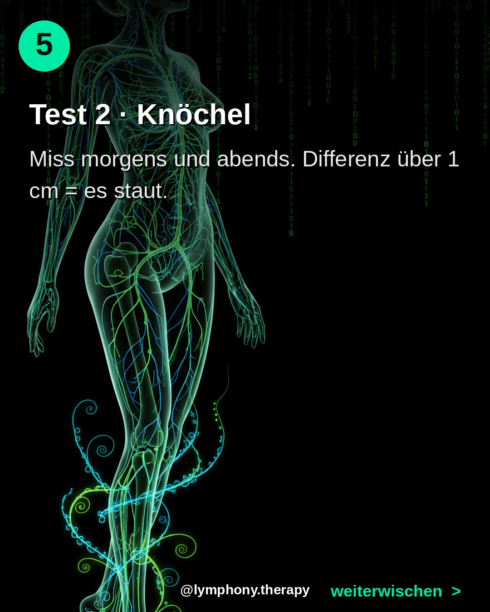
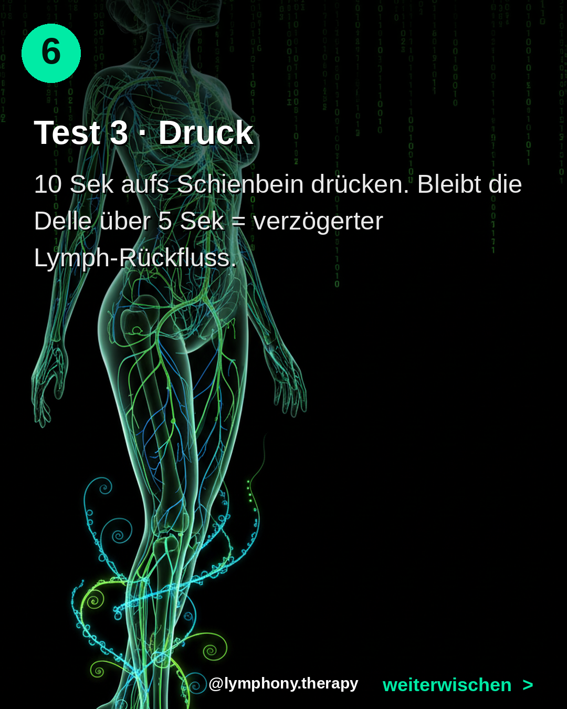
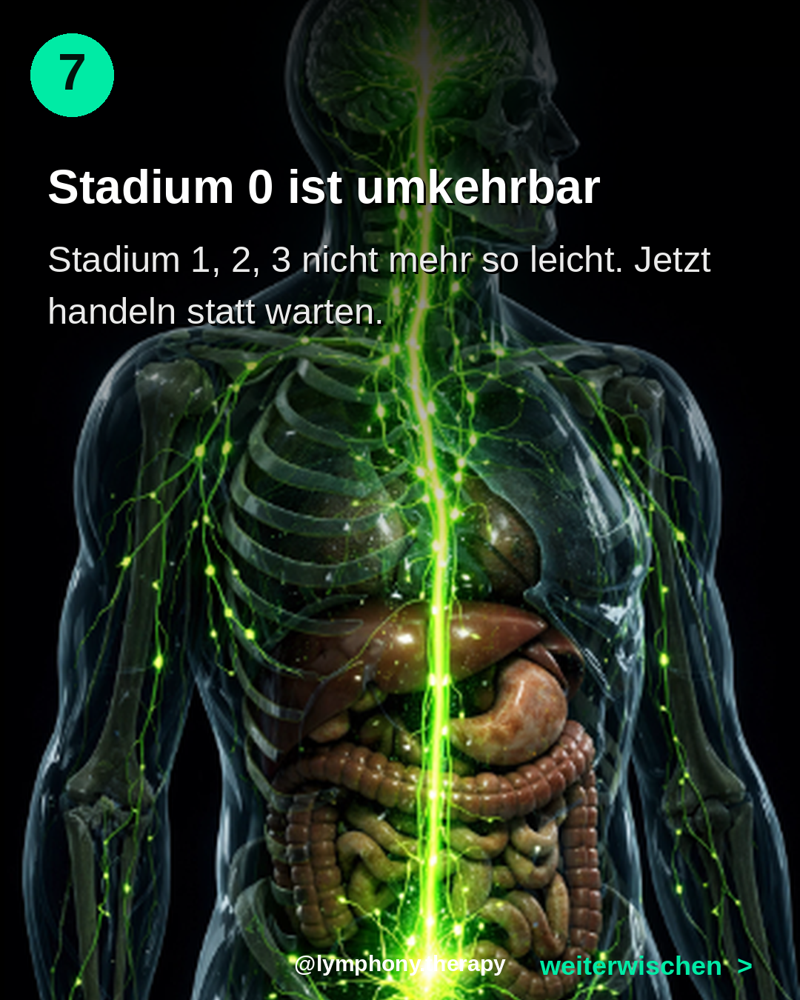
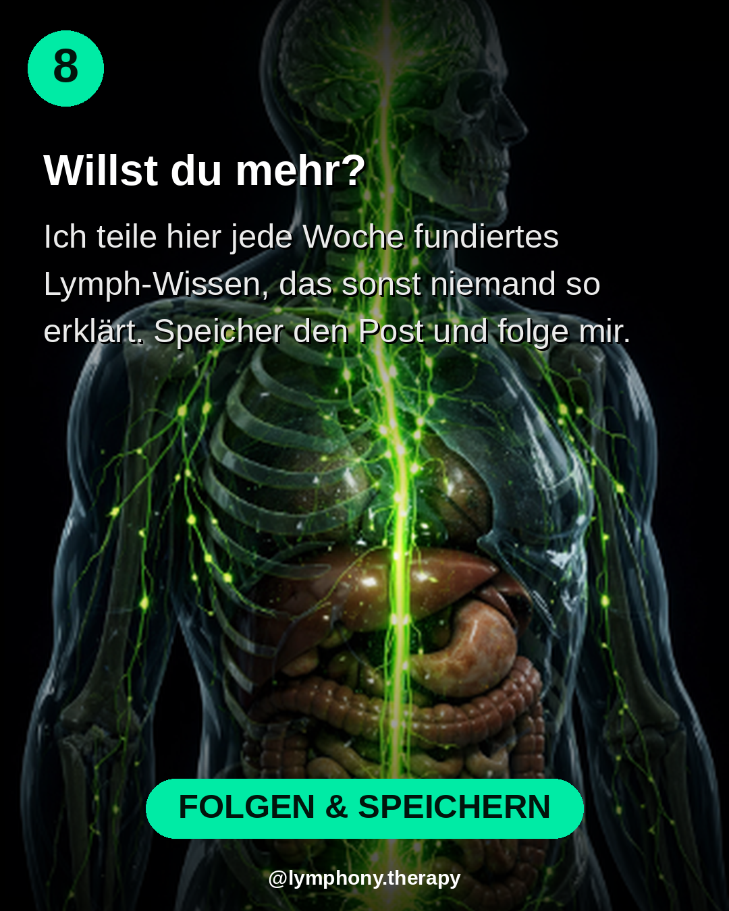

Bilder lange gedrueckt halten zum Speichern








Du hast keine Diagnose. Aber du hast Stadium 0. Und niemand sagt dir das.
Stadium 0 ist die OFFIZIELLE Vorstufe des Lymphoedems. Lymphkapazitaet schon reduziert - aber noch kompensiert. Keine Schwellung sichtbar. Aber: Schwere, Aufgequollensein, Mattigkeit. Wahrscheinlich Millionen Frauen ab 35 leben hier - ohne dass es diagnostiziert wird.
Im Carousel: 3 Selbsttests, die du in 60 Sek machst.
Quelle: Foeldi & Schingale, Deutsche Gesellschaft fuer Lymphologie
Speicher diesen Post fuer den naechsten Morgen. Drueck 'gefaellt mir'. Schick ihn deiner Freundin.
Speicher diesen Post. Mach den Test morgen frueh. Schreib 'TEST' in die Kommentare, wenn du Stadium 0 vermutest - ich schick dir eine 5-Min-Sofortmassnahme per DM.
#stadium0 #lymphinsuffizienz #lymphoedem #stemmerzeichen #lymphdrainage #lymphe #wassereinlagerungen #cellulite #schwerebeine #frauenab40 #lymphony #lymphsystem #preventiv #longevity #selbsttest